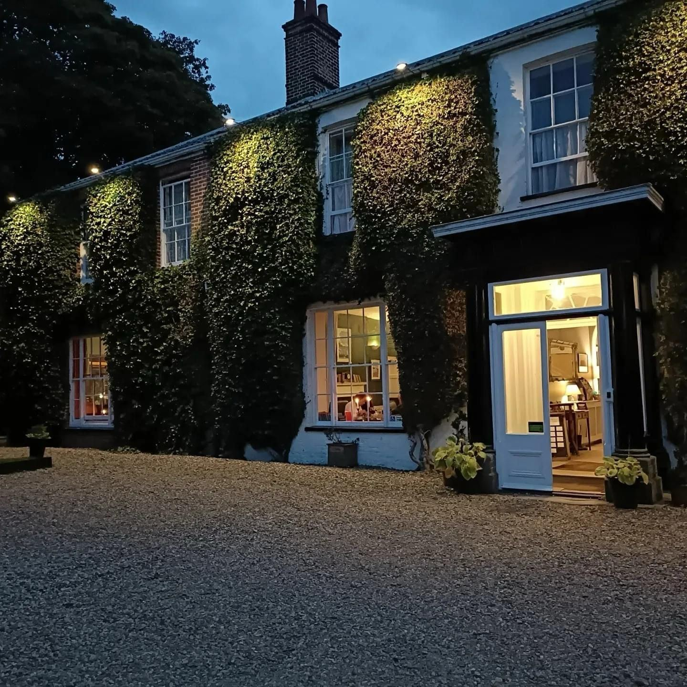
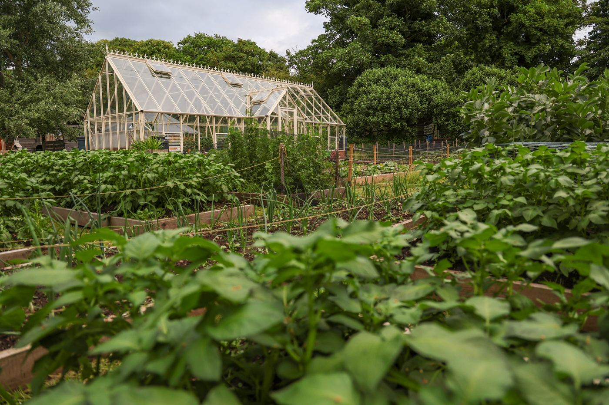

For a private commission — a course closed for a morning, arrival by air — see By Arrangement.

Stay & Play · North Norfolk
Most of our itineraries put the emphasis squarely on the golf — where to play, in what order, with which transfer sorted between rounds. Every so often, though, the accommodation ends up being the thing guests talk about most on the way home. The Grove is one of those places.
It's a Georgian house on the clifftop road above Cromer, built roughly 250 years ago and run as a guest house by the Graveling family since 1936. Ninety years under one family is rare for any hospitality business, and it shows in the way the place is run — nothing about it feels like it's performing for guests. It just quietly does what a good country house does well, and has done for a long time.
The grounds run to four acres, with an indoor heated pool for anyone nursing a long day on the links, and a woodland path that comes out on the clifftop above the beach. It's an easy walk down after a round, and a good way to shake off eighteen holes before dinner.
The kitchen itself sources a lot closer to home than most. Head Chef Sean O'Callaghan runs The Garden Rooms off the estate's own greenhouse and vegetable beds, so a fair amount of what lands on the plate hasn't travelled further than the length of the garden. Cromer crab, lobster and prawns come from the coast a few minutes away, which is about as local as seafood gets.

Sundown is the estate's tented restaurant on the front lawn, its twin peaks giving it a striking look from outside even though it's one continuous space inside — wood-fired pizzas and Norfolk-leaning small plates through the day, then festoon lights and a slower pace once the sun goes down. It's a good spot for a group to unwind without anyone needing to dress up for it.
"Ninety years of doing the simple things well — which turns out to be exactly what a good golf break needs at the end of the day."
It's become the stay we point guests toward for Royal Cromer and Sheringham — close enough to both that the drive barely counts, and comfortable enough that nobody's in a rush to check out.
If you're building a North Norfolk trip and want somewhere with a bit more history than the average golf hotel, this is worth putting on the list.
Speak to Golf East Anglia about building The Grove into your itinerary.
Start your enquiry